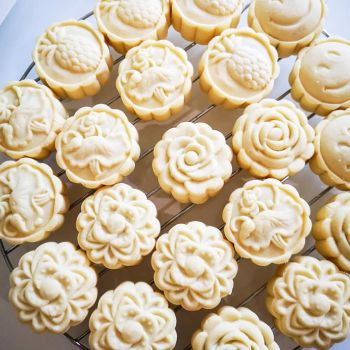

Pineapple Butter Cookies

Description
Are you into cookies full of delicious, pure butter with a tangy flavor of preserved fruit jam? Then the Pineapple Butter Cookie takes the cake. (*ba dum tss*)
The texture mix of buttery outside layer and generously jam-filled inside makes this cookie utterly delicious. Best consumed alongside an unsweetened tea.
Ingredients:
- Cake flour 290gr
- Pure butter 150gr
- 1/2 egg
- Icing Sugar 90g
- Pinch of salt
- Preserved pine apple jam 300g
- Baking powder 1 tea spoon
Steps:
- Sift icing sugar into room temperature butter and whisk it together on medium speed, until lighter color appears (we'll call this butter and sugar bowl)
- Add 1/2 eggs in
- In separate bowl sift cake flour, baking powder and salt together (dry ingredient bowl)
- Put 1/3 of dry inredients in the butter and sugar bowl and mix well. Add 2 parts of the dry ingredients bowl one by one and mix it in well.
- Form 15 grams of preserved pine apple jam into ~20 balls
- Repeat the process in the previous step using the dough mixture you previously created. Form them into 20 grams balls.
- Flatten the dough balls, add the preserved jam balls on top and cover it with the rest of the dough, to form a bigger ball
- (optional) Shape it using a cookie mold
- Align the formed cookies on top of the tray
- Heat up the oven to 160c and bake for 12 minutes
- Wait for the tray to cool down completely before consuming